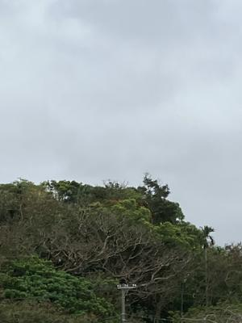

うるがいの話 ある日
最新: 紹介期限日【うるがいの話 ある日】とは 一日だけのプログです
『うるがいの話』の最新一日だけのプログで、通信料が少なく経済的だ。カニの画像をクリックすると全ての日付が載る『うるがいの話』サイトを表示します
|
|
【うるがいの話】 うるがい(ｳﾙｶﾞｲ urugai)とは、『もずくがに』の名前でとても大きくなります。 |
|---|---|
|
|
【カミマヤーの話】 猫のことを方言でマヤーといいます。カミマヤー（kamimayaa）とは、神の猫のことです。 |
|
【たながぁの音楽】 たながぁ（ﾀﾅｶﾞｰ tanagaa）とは手長えびのことで、何種類かあり大きいのは車 エビぐらいになります。 |

|
【ぶながぁの話】 ぶながぁ(ﾌﾞﾅｶﾞｰ bunagaa)とは、赤い髪の毛、赤い身体、そして身長は１ｍ２０ｃｍ ぐらい、川の蟹を食べているの目撃された。場所は沖縄県国頭郡大宜味村のと ある村僕の隣近所に住んでいる爺さんから、聞いた話です。 |
|
|
【ギーマの話】 ギーマ(giima)とは、山原の里山に咲くスズランに似た、 花を付けます。実は食べられます、 気が付くと口の周りが紫になっています。 |
2024年02月17日 (土）紹介期限日
15:30

この前、求職活動をしている人からかオギさんが所持している会社のスマホ
に求職活動にかかる問い合わせが、あった。ん、まだ採用活動をしているの
か？と疑問に思い、ハローワークの会社の求人情報を確認したら、紹介期限
日が今月末になっていた（因みに受付年月日：２０２３年１２月７日）。
フーン、金になる仕事も受注できれいなのに・・・・、年末にみたホームペ
ージが１月２０日にリニューアルされ、すこしカッコイイ。ただ、
■■■■■など日本で長く培われた技術スキル運用保守の経験がある方
ダイバーシティ、ホスピタリティ、チームワーク、家族やふるさとを大事に
する方
定年後も働きたいという想いを大事にする方
身体に無理なくノビノビと働く方
趣味や家族との時間も大切にする方
リモートワーク／フレックスOK
いまのところ、そこに完全に該当する人はいない！。フーン、そもそも定年
しているのは、ヒラ社員では私だけだし。定年後も働きたいと先頭にもって
くるのは気持ちが分かるが、求職条件のフル勤務では？、ノビノビと働ける
のかと言わないが、本音ではパート勤務を希望。私を除く皆さんはこのまえ
保険証を渡されたが私が正式に社員として扱われるのは４月以降で、まだ国
民健康保険証である。マ、気にしないが。
１５時２２分 ビットコインの総資産 ￥２２、６４２（↓２０）